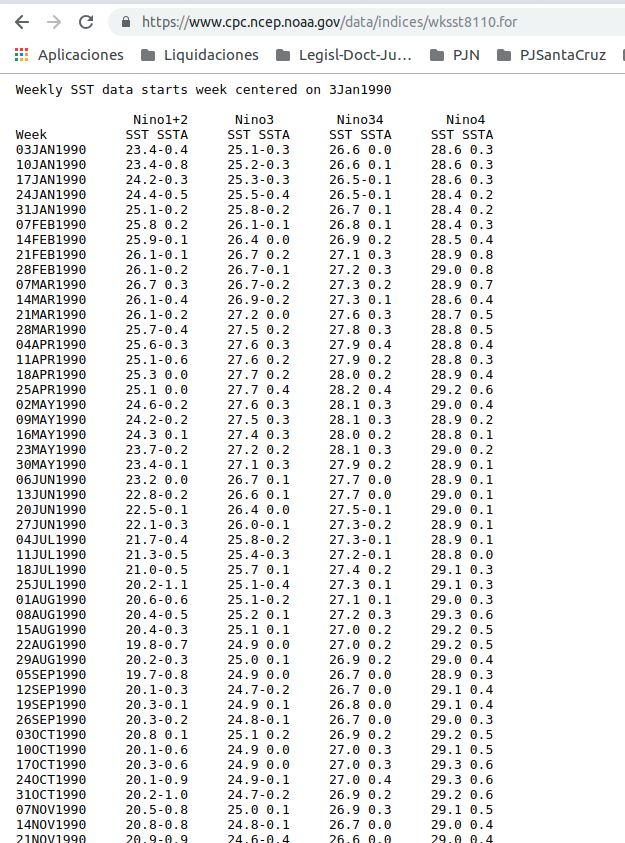

Getting and Cleaning Data Course - Module 2
- 1 Reading from MySQL.
- 1.1 Example of the data structrue in a MySQL database.
- 1.2 Installing MySQL.
- 1.3 Installing RMySQL.
- 1.4 Example of a web-facing version of a MySQL database.
- 1.5 Connecting to a MySQL server and
listing databases:
dbConnect(),dbGetQuery(),dbDisconnect(). - 1.6 Connecting to a specific database
and listing its tables:
dbListTables(). - 1.7 Getting the dimensions of a
specific table, its fields (columns) and records (rows):
dbListFields(),dbGetQuery(). - 1.8 Read from the table:
dbReadTable(). - 1.9 What if the table is gigantic?
Select a specific subset with
dbSendQuery(),fetch(),dbClearResult(). - 1.10 General advices about public databases.
- 1.11 Further resources about MySQL.
- 2 Manipulating a data frame with SQL
commands: the
sqldfpackage. - 3 Reading from HDF5.
- 3.1
rhdf5package. - 3.2 Creating HDF5 files:
h5createFile(). - 3.3 Creating a group hierarchy in an
HDF5 file and listing the content:
h5createGroup(),h5ls(). - 3.4 Writing and deleting datasets in
HFD5 files:
h5write(),h5delete(). - 3.5 Reading data from a HDF5 file:
h5read(). - 3.6 Writing and reading chunks.
- 3.7 Deleting an HDF5 file itself:
file.remove(). - 3.8 Further resources about HDF5.
- 3.1
- 4 Reading data from the Web.
- 5 Reading data from APIs, with the
httrpackage.- 5.1 Twitter API.
- 5.1.1 Creating a Twitter application. Requirements for accessing Twitter API.
- 5.1.2 Source code and version control security warning: store API keys in environment variables.
- 5.1.3 Accessing Twitter API from R
with
httrpackage:oauth_app(),sign_oauth1.0()andsign_oauth2.0(). - 5.1.4 API endpoints’ URLs as input for
GET(): a usefuloauth_endpoints()function.
- 5.2 GitHub API.
- 5.1 Twitter API.
- 6 Reading from other sources.
- 6.1 Interacting more directly with
files:
file(),url(),gzfile(),bzfile(). - 6.2 The
foreingpackage. - 6.3 Reading fixed-format files:
read.fortran(),read.fwf()from theutilspackage. - 6.4 Examples of other databases
packages:
RPostgreSQL,RODBC,rmongodb. - 6.5 Reading images.
- 6.6 Reading GIS data.
- 6.7 Reading music data.
- 6.1 Interacting more directly with
files:
- 7 Session Info.
1 Reading from MySQL.
MySQL’s one of the most widely used open source databases.
- Basically because it’s free but also because it works really well.
It’s widely used in Internet-based applications.
Data are structured in databases.
Within each database, there’s a series of tables.
And within the tables, there a series of fields.
Each row is called a record.
So, we can think of each table of a datbase as a dataset, where:
each field of the table is one of it’s columns;
each record is one row.
1.1 Example of the data structrue in a MySQL database.
As an example structure that we would get for a particular database, we can see this the following database of employees.

Employees schema from MySQL documentation
- We can see there several different tables that are all linked
together, for example we might have all these tables:
- departments that the employees are employed in;
- the employees themselves;
- information about employees salaries in a different
table;
- information about who their managers are in yet another
table;
- and information about their titles in yet another
table.
- departments that the employees are employed in;
- For each table, we get a slightly different kind of data type.
We can think that one box corresponds to one data frame in R, so to speak.
And we can think all of the variables listed inside the box, as the column names for that data frame in R.
We can also notice that there are linked
tables, because of the common ids
(emp_no) that appear in all of them.
Therefore it’s possible to access for an employee, which department he belongs to, what his salary is, what title he has and who’s his department manager.
The department managers are then organized into departments, so we could follow that back and find out who the employees are.
1.2 Installing MySQL.
At the time of writing these notes, we find in MySQL web site:
We can see in both pages that there’s a version of MySQL for just about every kind of operating system that we might be interested in installing it on.
The instructions are pretty explicit on how to install MySQL.
I’ve decided to install the latest MySQL version (8.15), instead of that that has been used in the course (version 5.7). I hope no compatibility problems arise.
1.3 Installing RMySQL.
RMySQL is a database interface and a MySQL driver implementing the R database (DBI) API.
How to install RMySQL:
On Mac/Unix we can just do
install.packages("RMySQL").For Windows, it’s actually a little bit more complicated because of the way that the database drivers need to be set up and so forth.
See the official instructions here
This guide is quite a bit more intuitive and useful.
1.4 Example of a web-facing version of a MySQL database.
We’re going to use a web-facing version of a MySQL
database, so that we can just concentrate on how the R
part of RMySQL package works, that is to say, how can we
work with a database without having to actually build it.
As data scientists we’ll likely have to collect data from a database and maybe later we’re going to put some data back in it. But usually, the basic data collection has already been formed before, so we’ll usually be handed a database to get data out of it.
The University of California Santa Cruz has one of the most famous databases about the human genome.
And they have a public facing MySQL page, a sort of MySQL server that gives us the information on how to connect to it.
UCSC Genome Browser
So, we’ll connect to this MySQL sever and try to access the database and collect some information about a particular genome that we’re interested in.
1.5 Connecting to a MySQL
server and listing databases: dbConnect(),
dbGetQuery(), dbDisconnect().
Once we’ve loaded RMySQL package in R, we can use the
dbConnect() command to connect to a
database server.
It connects to a DBMS going through the appropriate authentication procedure.
And it returns an object, called handle, that is used to communicate with the database engine.
library(RMySQL)
Attaching package: 'RMySQL'
The following object is masked from 'package:RSQLite':
isIdCurrent
str(dbConnect)
Formal class 'standardGeneric' [package "methods"] with 8 slots
..@ .Data :function (drv, ...)
..@ generic : chr "dbConnect"
.. ..- attr(*, "package")= chr "DBI"
..@ package : chr "DBI"
..@ group : list()
..@ valueClass: chr "DBIConnection"
..@ signature : chr "drv"
..@ default : NULL
..@ skeleton : language (function (drv, ...) stop("invalid call in method dispatch to 'dbConnect' (no default method)", ...So, we’ll connect to the genomic MySQL database of UCSC. By the time of writing these notes, there are indeed two database servers available for public access.
One located in the US:
genome-mysql.soe.ucsc.edu.The other located in Europe:
genome-euro-mysql.soe.ucsc.edu.
We are going to do three things in a continous series of commands (open a connection with a db server, make a query and disconnect us from the server).
- In order to connect to a db server (we are going to use the first
one), we have to pass to
dbConnectthese arguments:- The
MySQL()function, because we want to connect to a MySQL server (it returns a singlenton that allows us to connect to MySQL).- We can also use
dbConnectto connect not only to MySQL servers, but also to other kinds as well.
- We can also use
- Other authentication arguments needed by the DBMS
instance (typically,
user,password,host,port,dbname, etc.). In our example, we need to specify:- The
user: as we can see in the UCSC webpage, it isgenome.
- The
host: we choose the MySQL server in the US,genome-mysql.soe.ucsc.edu.
- The
- The
- Once a connection is established and passed to a handle (that we’ll
call
ucscDb), we can then apply a query to the database. And we can do that with thedbGetQuery()function, that takes the following arguments:- The handle that is in charge of the communication with the database engine.
- And the
MySQLcommand that we want to send to the database through thisdbGetQuery()function, in this case, we issue theshow databases;command because we want to see the list of the databases available in the host.
- Finally, after we’ve done with our queries, we use
dbDisconnect().- It’s very important that, whenever we’re done
analyzing data or collecting data from a MySQL server, we disconnect
from that server.
- We should get a
TRUEresponse, that is coming fromdbDisconnectconfirming that we did, in fact, disconnect from the server.
- It’s very important that, whenever we’re done
analyzing data or collecting data from a MySQL server, we disconnect
from that server.
ucscDb <- dbConnect(MySQL(), user = "genome", host = "genome-mysql.soe.ucsc.edu")
result <- dbGetQuery(ucscDb, "show databases;")
dbDisconnect(ucscDb)
[1] TRUE
str(result)
'data.frame': 340 obs. of 1 variable:
$ Database: chr "acaChl1" "ailMel1" "allMis1" "allSin1" ...- So
resultis a data frame that shows a list of all the databases that are available within the MySQL server.
1.6 Connecting to a
specific database and listing its tables:
dbListTables().
We’ll now focus on one particular database: the
hg19.
- This is a particular build of the human genome, the 19th build of the human genome.
In order to connect to a specific database within a server, we’ll run
dbConnect command again, but instead of just passing it the
user, we’ll also pass the database
name through to the db
parameter.
One more time, then, we’ll make the connection to the
database, issue the query we want (this time we want to see all
the tables that exist in that database, with the
dbListTables() function), and close the
connection.
hg19 <- dbConnect(MySQL(), user = "genome", db = "hg19", host = "genome-mysql.soe.ucsc.edu")
allTables <- dbListTables(hg19)
dbDisconnect(hg19)
[1] TRUE
str(allTables)
chr [1:12603] "HInv" "HInvGeneMrna" "acembly" "acemblyClass" "acemblyPep" ...So
allTablesis a large character vector with 12603 table names (all of them in a single database).Those tables correspond to various different elements that describe components of the human genome. Each table corresponds to a different kind of dataset.
So, we can think about it in the same way that the tidy data principle is. We saw that each dataset corresponds to its own file. It’s the same way here, each different data type gets its own table.
1.7 Getting the
dimensions of a specific table, its fields (columns) and records (rows):
dbListFields(), dbGetQuery().
Suppose we are interested in this specific table:
affyU133Plus2 within hg19 database.
- This table is for a particular kind of micro-array, which is a measurement technology used to measure something about the genome.
More precisely, suppose we’re interested in two things:
Look at all the fields in that particular table (as we said, the fields correspond to something like the column names of a data frame).
- We can do this through the
dbListFields()command, to which we give the db connection handle and the name of the table we want.
- We can do this through the
Find out how many records (different rows) there are in the table.
- We just send another query to the database, through
dbGetQueryagain, passing to it the corrispondingMySQLcommand in quotes:"select count(*) from affyU133Plus2"(something like select all records and count them, from the table).
- We just send another query to the database, through
hg19 <- dbConnect(MySQL(), user = "genome", db = "hg19", host = "genome-mysql.soe.ucsc.edu")
dbListFields(hg19, "affyU133Plus2")
[1] "bin" "matches" "misMatches" "repMatches" "nCount"
[6] "qNumInsert" "qBaseInsert" "tNumInsert" "tBaseInsert" "strand"
[11] "qName" "qSize" "qStart" "qEnd" "tName"
[16] "tSize" "tStart" "tEnd" "blockCount" "blockSizes"
[21] "qStarts" "tStarts"
dbGetQuery(hg19, "select count(*) from affyU133Plus2")
count(*)
1 58463
dbDisconnect(hg19)
[1] TRUESo
dbListFieldsreturns a character vector with all the fields names (columns) of the table.And the MySQL query we issued in second place, the number of the records (rows) of the table.
1.8 Read from the table:
dbReadTable().
Now suppose we want to get one of the tables out. Basically get a data frame out from a table.
We can use for this the dbReadTable() function, just
passing to it, besides the usual db connection handle, the table name
that we’re interested in.
hg19 <- dbConnect(MySQL(), user = "genome", db = "hg19", host = "genome-mysql.soe.ucsc.edu")
affyData <- dbReadTable(hg19, "affyU133Plus2")
dbDisconnect(hg19)
[1] TRUE
str(affyData)
'data.frame': 58463 obs. of 22 variables:
$ bin : num 585 585 585 585 585 585 585 585 73 585 ...
$ matches : num 530 3355 4156 4667 5180 ...
$ misMatches : num 4 17 14 9 14 5 3 0 21 23 ...
$ repMatches : num 0 0 0 0 0 0 0 0 0 0 ...
$ nCount : num 23 109 83 68 167 14 6 8 56 75 ...
$ qNumInsert : num 3 9 16 21 10 0 1 1 2 22 ...
$ qBaseInsert: num 41 67 18 42 38 0 1 1 2 41 ...
$ tNumInsert : num 3 9 2 3 1 0 1 2 1 3 ...
$ tBaseInsert: num 898 11621 93 5743 29 ...
$ strand : chr "-" "-" "-" "-" ...
$ qName : chr "225995_x_at" "225035_x_at" "226340_x_at" "1557034_s_at" ...
$ qSize : num 637 3635 4318 4834 5399 ...
$ qStart : num 5 0 3 48 0 0 0 1 12 3 ...
$ qEnd : num 603 3548 4274 4834 5399 ...
$ tName : chr "chr1" "chr1" "chr1" "chr1" ...
$ tSize : num 2.49e+08 2.49e+08 2.49e+08 2.49e+08 2.49e+08 ...
$ tStart : num 14361 14381 14399 14406 19688 ...
$ tEnd : num 15816 29483 18745 24893 25078 ...
$ blockCount : num 5 17 18 23 11 1 3 4 4 24 ...
$ blockSizes : chr "93,144,229,70,21," "73,375,71,165,303,360,198,661,201,1,260,250,74,73,98,155,163," "690,10,32,33,376,4,5,15,5,11,7,41,277,859,141,51,443,1253," "99,352,286,24,49,14,6,5,8,149,14,44,98,12,10,355,837,59,8,1500,133,624,58," ...
$ qStarts : chr "34,132,278,541,611," "87,165,540,647,818,1123,1484,1682,2343,2545,2546,2808,3058,3133,3206,3317,3472," "44,735,746,779,813,1190,1195,1201,1217,1223,1235,1243,1285,1564,2423,2565,2617,3062," "0,99,452,739,764,814,829,836,842,851,1001,1016,1061,1160,1173,1184,1540,2381,2441,2450,3951,4103,4728," ...
$ tStarts : chr "14361,14454,14599,14968,15795," "14381,14454,14969,15075,15240,15543,15903,16104,16853,17054,17232,17492,17914,17988,18267,24736,29320," "14399,15089,15099,15131,15164,15540,15544,15549,15564,15569,15580,15587,15628,15906,16857,16998,17049,17492," "14406,20227,20579,20865,20889,20938,20952,20958,20963,20971,21120,21134,21178,21276,21288,21298,21653,22492,225"| __truncated__ ...So it returns, directly from a database in the MySQL server, the specific
data.frame(table) we wanted.In this manner, we can extract the data one table at a time.
1.9 What if the table is
gigantic? Select a specific subset with dbSendQuery(),
fetch(), dbClearResult().
When working with MySQL databases, there’ll often be a huge amount of data stored. Any particular table might be enormous and might be too big to read into R.
One thing we might want to do is select only a subset of the data.
In particular, suppose that we want only the observations in the
affy/133Plus2table that meet this condition: themisMatchesfield (variable/column) has to be in the range of 1 to 3.The corrisponding
MySQLcommand for that selection is as follows:select * from affyU133Plus2 where misMatches between 1 and 3
Now, instead of sending that query and getting inmediatly the
response via the dbGetQuery() command, we can make those
two steps separately, as follows:
First, use the
dbSendQuery()command just to send the query to the database, to store the query remotely at the database.- It has basically the same arguments than
dbGetQuery().
- It has basically the same arguments than
Then, when we want to get the records of that query, we use the
fetch()command all the times that we want while the connection is still on.It’s first argument is the object (handle) created by
dbSendQuery().And we can also specify as second argument the number of records (observations/rows) we want from the previously executed query.
This function retruns a
data.frame.
Finally, it’s important to clear the query with
dbClearResult()command.The query we sent out to the MySQL server, is still sitting out there. When we fetch the data back, it doesn’t stop that query from still being out there, at the MySQL Server.
So
dbClearResult()frees all resources (local and remote) associated with a result set. In some cases (e.g., very large result sets) this can be a critical step to avoid exhausting resources (memory, file descriptors, etc.).It should return
TRUEagain.
This technique is useful when we just want to see a little bit of the data and make sure that we don’t accidentally bring down to our computer a gigantic table.
- We can just use the fetch command, telling it only bring back a small number of records.
hg19 <- dbConnect(MySQL(), user = "genome", db = "hg19", host = "genome-mysql.soe.ucsc.edu")
query <- dbSendQuery(hg19, "select * from affyU133Plus2 where misMatches between 1 and 3")
affyMis <- fetch(query)
affyMisSmall <- fetch(query, n = 10)
dbClearResult(query)
[1] TRUE
dbDisconnect(hg19)
[1] TRUE
str(affyMis)
'data.frame': 500 obs. of 22 variables:
$ bin : num 585 586 73 587 587 587 588 588 589 589 ...
$ matches : num 723 740 986 741 985 ...
$ misMatches : num 3 2 3 1 1 1 3 3 1 1 ...
$ repMatches : num 0 0 0 0 0 0 0 0 0 0 ...
$ nCount : num 6 26 17 26 17 0 11 76 0 0 ...
$ qNumInsert : num 1 0 2 0 3 0 13 24 0 0 ...
$ qBaseInsert: num 1 0 2 0 5 0 13 28 0 0 ...
$ tNumInsert : num 1 0 0 0 1 0 3 1 0 0 ...
$ tBaseInsert: num 2 0 0 0 2 0 836 1 0 0 ...
$ strand : chr "+" "-" "+" "+" ...
$ qName : chr "228609_at" "225899_x_at" "1569609_at" "225899_x_at" ...
$ qSize : num 733 851 1075 851 1075 ...
$ qStart : num 0 70 23 70 23 0 20 2 0 0 ...
$ qEnd : num 733 838 1031 838 1031 ...
$ tName : chr "chr1" "chr1" "chr1" "chr1" ...
$ tSize : num 2.49e+08 2.49e+08 2.49e+08 2.49e+08 2.49e+08 ...
$ tStart : num 28444 134772 261364 327813 347276 ...
$ tEnd : num 29178 135540 262370 328581 348281 ...
$ blockCount : num 3 1 3 1 4 1 17 25 1 1 ...
$ blockSizes : chr "145,125,462," "768," "597,54,355," "768," ...
$ qStarts : chr "0,145,271," "13," "23,621,676," "70," ...
$ tStarts : chr "28444,28591,28716," "134772," "261364,261961,262015," "327813," ...
quantile(affyMis$misMatches)
0% 25% 50% 75% 100%
1 1 2 2 3
str(affyMisSmall)
'data.frame': 10 obs. of 22 variables:
$ bin : num 866 866 866 866 866 866 866 874 874 874
$ matches : num 1065 1846 932 932 1543 ...
$ misMatches : num 3 1 3 3 1 1 2 3 2 1
$ repMatches : num 0 0 0 0 0 0 0 0 0 0
$ nCount : num 18 9 35 35 68 0 0 0 3 3
$ qNumInsert : num 1 3 1 1 2 1 0 0 0 3
$ qBaseInsert: num 14 22 1 1 2 1 0 0 0 3
$ tNumInsert : num 1 10 8 8 3 9 16 5 0 0
$ tBaseInsert: num 3613 26349 7715 7715 6960 ...
$ strand : chr "-" "-" "+" "+" ...
$ qName : chr "225593_at" "227359_at" "223291_at" "223292_s_at" ...
$ qSize : num 1131 1878 972 972 1658 ...
$ qStart : num 0 0 1 1 0 3 0 0 1 2
$ qEnd : num 1100 1878 972 972 1614 ...
$ tName : chr "chr1" "chr1" "chr1" "chr1" ...
$ tSize : num 2.49e+08 2.49e+08 2.49e+08 2.49e+08 2.49e+08 ...
$ tStart : num 36859020 36881416 36921278 36921278 36921374 ...
$ tEnd : num 36863719 36909621 36929963 36929963 36929946 ...
$ blockCount : num 3 13 10 10 6 11 17 6 1 4
$ blockSizes : chr "734,131,221," "578,350,64,140,70,45,8,76,104,81,168,155,17," "248,192,59,85,49,12,64,45,208,8," "248,192,59,85,49,12,64,45,208,8," ...
$ qStarts : chr "31,765,910," "0,598,948,1012,1152,1222,1268,1277,1353,1457,1538,1706,1861," "1,249,441,500,585,634,647,711,756,964," "1,249,441,500,585,634,647,711,756,964," ...
$ tStarts : chr "36859020,36863367,36863498," "36881416,36883506,36884591,36886076,36887750,36888368,36888413,36888421,36888963,36897402,36898022,36904356,36909604," "36921278,36921787,36923523,36926292,36926864,36927688,36927700,36929406,36929746,36929955," "36921278,36921787,36923523,36926292,36926864,36927688,36927700,36929406,36929746,36929955," ...The quantiles of
misMatchesis only to verify that we selected the records withmisMatchesbetween one and three.We can see that
fetchretruns the result of the previously excecuted query asdata.frame.
1.9.1 Importance of MySQL queries.
We can basically send any MySQL query that we would like to a database.
It’s beyond the scope of this course to teach all of the different queries. We’ve seen the most important ones.
But if we go to the MySQL documentation, we can actually come up with a query that will allow us to very flexibly select almost any sort of subset of rows or columns from a dataset that we’re interested in selecting.
1.10 General advices about public databases.
All that what we’ve done in this lecture is only
select data from a public MySQL server.
When dealing with this kind of public resources, it’s very important that we do not access the server to delete, add or join things.
In other words, don’t push anything back into the server, only retrieve or select things out of the server. We should only be using the select command.
Another issue regards the access to a web-facing MySQL server like that we’ve been working with, and it’s this:
As an act of good citizenship to the world, we should not contribute to a massive access to a server.
It’s better if we create a MySQL database on our own system and then play around with it.
1.11 Further resources about MySQL.
To know more about MySQL structure, we can look at:
the extensive documentation at MySQL website
The RMySQL vignette is very good:
- It gives access to a bunch of other MySQL commands that might be useful for selecting data.
There’s also this collection of MySQL commands, very nicely organized.
2 Manipulating a data
frame with SQL commands: the sqldf package.
The sqldf() function of this package,
is typically passed a single argument which is an
SQL select statement where the table names are ordinary
R data frame names.
It transparently sets up a database, imports the data frames into that database, performs the SQL select or other statement and returns the result using a heuristic to determine which class to assign to each column of the returned data frame.
RSQLite,RH2,RMySQLandRPostgreSQLbackends are supported.More information on the CRAN web page of this package.
Let’s install from CRAN this package:
install.packages("sqldf").
Notice: to use
sqldfpackage we need to load only that package, it doesn’t needRMySQLor any other like that.If both
sqldfandRMySQLare loaded, there could be problems so we should better deattachRMySQL.
Let’s make the following example.
if("RMySQL" %in% (.packages())) {
detach("package:RMySQL", unload = TRUE)
}
library(sqldf)
# Download the American Survey data and load it into an R object.
acs <- read.csv("https://d396qusza40orc.cloudfront.net/getdata%2Fdata%2Fss06pid.csv")
class(acs)
[1] "data.frame"
dim(acs)
[1] 14931 239
# SQL command to select only the data for the probability weights "pwgtp1"
# with ages less than 50.
head(sqldf("select pwgtp1 from acs where AGEP < 50"), 30)
pwgtp1
1 87
2 88
3 94
4 91
5 539
6 192
7 153
8 232
9 205
10 226
11 225
12 109
13 129
14 115
15 162
16 190
17 192
18 185
19 186
20 26
21 157
22 15
23 36
24 307
25 18
26 43
27 137
28 49
29 69
30 71
# Just checking.
head(sqldf("select pwgtp1, AGEP from acs where AGEP < 50"), 30)
pwgtp1 AGEP
1 87 43
2 88 42
3 94 16
4 91 14
5 539 29
6 192 40
7 153 15
8 232 28
9 205 30
10 226 4
11 225 1
12 109 40
13 129 42
14 115 18
15 162 16
16 190 37
17 192 39
18 185 4
19 186 3
20 26 28
21 157 49
22 15 45
23 36 37
24 307 15
25 18 39
26 43 40
27 137 39
28 49 35
29 69 12
30 71 49
summary(acs$AGEP)
Min. 1st Qu. Median Mean 3rd Qu. Max.
0.00 16.00 37.00 37.05 55.00 93.00
sqldf("SELECT count(pwgtp1) FROM acs WHERE AGEP < 50")
count(pwgtp1)
1 10093
sqldf("SELECT count(pwgtp1) FROM acs")
count(pwgtp1)
1 14931
# SQL command equivalent to "unique(acs$AGEP)".
unique(acs$AGEP)
[1] 43 42 16 14 29 40 15 28 30 4 1 18 37 39 3 87 70 49 45 50 60 59 61 64 35
[26] 12 19 31 9 0 33 32 20 88 53 58 69 68 48 24 27 74 56 75 17 38 55 26 23 86
[51] 81 77 7 51 13 11 82 47 46 80 21 54 78 67 22 2 76 6 71 34 10 5 65 62 63
[76] 57 52 79 83 66 25 93 8 36 41 44 84 72 73 85 89
unique_df <- sqldf("SELECT distinct AGEP FROM acs")
str(unique_df)
'data.frame': 91 obs. of 1 variable:
$ AGEP: int 43 42 16 14 29 40 15 28 30 4 ...
unique_df$AGEP
[1] 43 42 16 14 29 40 15 28 30 4 1 18 37 39 3 87 70 49 45 50 60 59 61 64 35
[26] 12 19 31 9 0 33 32 20 88 53 58 69 68 48 24 27 74 56 75 17 38 55 26 23 86
[51] 81 77 7 51 13 11 82 47 46 80 21 54 78 67 22 2 76 6 71 34 10 5 65 62 63
[76] 57 52 79 83 66 25 93 8 36 41 44 84 72 73 85 893 Reading from HDF5.
HDF5 (short for Hierarchical Data Format) is used for storing large data sets and also used for storing structured datasets.
- It supports storing a range of datatypes.
The format of the data is Hierarchical:
There are groups: the data is stored in groups which contains zero or more datasets, along with their metadata.
Each of these groups has a group header, with the group name and a list of attributes corresponding to that group.
Each group also has a group symbol table which has a list of the objects in the group.
There are then datasets: multidimensional arrays of data elements along with metadata.
They have a header with name, datatype, dataspace, storage layout.
And they also have a data array, which is actually a sort of a data frame of the HDF5 element.
HDF5 can be used to optimize reading and writing from disc in R.
3.1 rhdf5
package.
This package is an R interface for HDF5 files.
- It provides high level convenience functions on R level to make a usage of HDF5 files more esasy.
We can install the rhdf5 package from Bioconductor.
Bioconductor, primiarily used for genomics, also has good “big data” packages.
I’m currently running
R v. 3.6.3so I’m usingBiocManagerto install packages from Bioconductor.
BiocManager::install("rhdf5")Once we’ve installed the package, we can just load it with the
library command as always.
library(rhdf5)3.2 Creating HDF5 files:
h5createFile().
First we’ll create HDF5 files, and then interact with them.
- We could actually use the
rhdf5file package to access data and pull it out of HDF5 datasets without having to create them ourselves, but it’s easier in terms of lecturing just to show what it looks like when we create them ourselves.
So we’ll use the h5createFile() command to create an
empty HDF5 file, which we’re going to name
example.h5.
It returns
TRUEis the file is created successfully.If the file already exists, it does not create the file and returns
FALSE.
created <- h5createFile("./3_data/example.h5")
created
[1] TRUE3.3 Creating a group
hierarchy in an HDF5 file and listing the content:
h5createGroup(), h5ls().
A HDF5 file can contain a group hierarchy that we can create with
h5createGroup() function.
- If the group already exists, it is not created and
FASEis returned.
So let’s create some groups and list the file content afterwards.
h5createGroup("./3_data/example.h5", "foo")
[1] TRUE
h5createGroup("./3_data/example.h5", "baa")
[1] TRUE
h5createGroup("./3_data/example.h5", "foo/foobaa")
[1] TRUE
h5ls("./3_data/example.h5")
group name otype dclass dim
0 / baa H5I_GROUP
1 / foo H5I_GROUP
2 /foo foobaa H5I_GROUP - So we created within the file, three empty groups:
foo,baaandfoobaa. This last one, is a sub-group of a group.
3.4 Writing and deleting
datasets in HFD5 files: h5write(),
h5delete().
3.4.1 Writing to groups.
We can write to the specific groups using the h5write()
command.
str(h5write)
function (obj, file, name, ...) If a dataset with the given
namedoes not yet exist, a dataset is created in the HDF5fileand the objectobjis written to the HDF5file.If a dataset with the given
namealready exists and the datatype and the dimensions are the same as for the objectobj, the data in the file is overwritten.If the dataset already exists and either the datatype or the dimensions are different,
h5write()fails.For datasets of
compounddatatype, if it already existsh5write()fails. As we’ll see,data.framesare acompounddatatype in HDF5 files.
For example:
Let’s create a matrix
Aand then write it to a particular group. We just have to give as arguments the matrix, the file and the specific group where we want to write in.We can do the same thing with multidimensional arrays. Let’s also create one as an example and write it in our
foobaasubgroup.Attributes attached to an object are written as well, if
write.attributes = TRUE. So, let’s also add some attributes, some metadata, to our multidimensional array: theliterattribute, referred to the units.
A <- matrix(1:10, nr = 5, nc = 2)
h5write(A, file = "./3_data/example.h5", name = "foo/A")
B <- array(seq(0.1, 2.0, by = 0.1), dim = c(5, 2, 2))
attr(B, "scale") <- "liter"
h5write(B, "./3_data/example.h5", "foo/foobaa/B")
h5ls("./3_data/example.h5")
group name otype dclass dim
0 / baa H5I_GROUP
1 / foo H5I_GROUP
2 /foo A H5I_DATASET INTEGER 5 x 2
3 /foo foobaa H5I_GROUP
4 /foo/foobaa B H5I_DATASET FLOAT 5 x 2 x 2- We have now two gropus,
fooandfoobaathat are no empty any more, they have the datasets we’ve created.Ais an H5 dataset, it consists of integers in two dimensions.
Bis an H5 dataset which consists of floats in three dimensions.
A longer list of information is given if the parameter
all is TRUE.
h5ls("./3_data/example.h5", all = TRUE)
group name ltype corder_valid corder cset otype
0 / baa H5L_TYPE_HARD FALSE 0 0 H5I_GROUP
1 / foo H5L_TYPE_HARD FALSE 0 0 H5I_GROUP
2 /foo A H5L_TYPE_HARD FALSE 0 0 H5I_DATASET
3 /foo foobaa H5L_TYPE_HARD FALSE 0 0 H5I_GROUP
4 /foo/foobaa B H5L_TYPE_HARD FALSE 0 0 H5I_DATASET
num_attrs dclass dtype stype rank dim maxdim
0 0 0
1 0 0
2 0 INTEGER H5T_STD_I32LE SIMPLE 2 5 x 2 5 x 2
3 0 0
4 0 FLOAT H5T_IEEE_F64LE SIMPLE 3 5 x 2 x 2 5 x 2 x 23.4.2 Writing directly to the top level.
Suppose we want to write a dataset, say a data frame df,
to the top level group.
We can also do that with the h5write() command. We just
specify, without any group, the name (for example "df") we
want to give to the object df that we want to write in
-passed as first argument-.
df <- data.frame(1L:5L, seq(0, 1, length.out = 5), c("ab", "cde", "fghi", "a", "s"),
stringsAsFactors = FALSE)
h5write(df, file = "./3_data/example.h5", name = "df")h5ls("./3_data/example.h5")
group name otype dclass dim
0 / baa H5I_GROUP
1 / df H5I_DATASET COMPOUND 5
2 / foo H5I_GROUP
3 /foo A H5I_DATASET INTEGER 5 x 2
4 /foo foobaa H5I_GROUP
5 /foo/foobaa B H5I_DATASET FLOAT 5 x 2 x 2- So we can see at the top level group (sort of the root group), the
dfH5 dataset.
3.4.3 Deleting datasets
or groups: h5delete().
According to Bioconductor documentation, this function should be part of the HDF5 package interface.
By the time of writing these notes and downloading the
hdf5 package, h5delete() was not available
(version 2.22.0 was installed).
Nevertheless, we are going to see how it works because this function resolves a huge problem regarding properly deleting content of HDF5 files, especially considering that this kind of files is ment to be used to handle large volumes of data.
Indeed, HDF5 did not provide an easy mechanism to remove a dataset from a file or to reclaim the storage space occupied by a deleted object.
Removing a dataset and reclaiming the space it used were -and is still now- done with the
H5Ldelete()function and theh5repackutility program.With the
H5Ldelete()function, links to a dataset can be removed from the file structure. After all the links have been removed, the dataset becomes inaccessible to any application and is effectively removed from the file.The way to recover the space occupied by an unlinked dataset is to write all of the objects of the file into a new file. Any unlinked object is inaccessible to the application and will not be included in the new file. Writing objects to a new file can be done with a custom program or with the
h5repackutility program.
Nowadays, this problem is theoretically solved by
the h5delete() function.
We reproduce here what is explained about this funciton in this Bioconductor documentation.
So, as well as adding content to an HDF5 file, it is possible to
remove entries using the function h5delete(). We can remove
either datasets or groups.
The way we can remove a dataset is by providing the
file name and the name of the dataset.
- Let’s remove the data frame
dfthat we’ve written at the top level of our HDF5 file.
h5delete(file = "./3_data/example.h5", name = "df")- If we list the content of the file
(
h5ls("./3_data/example.h5")), we should see thatdfis gone.
And we can also remove a group. If it’s not empty,
h5delete() will remove children of the
deleted entry too.
Notice:
h5delete()does not explicitly traverse the tree to remove child nodes. It only removes the named entry, and HDF5 will then remove child nodes if they are now orphaned. Hence it won’t delete child nodes if we have a more complex structure where a child node has multiple parents and only one of these is removed.In our example, let’s remove the
foogroup.
h5delete("./3_data/example.h5", "foo")- Listing again,
fooshould be erased along with all that was inside: the datasetA, the sub-groupfoobaathe datasetBcointained in that sub-group.
To further verify all this, we could examine with the
file.size() function the size of the file in bytes before
and after deleting.
3.5 Reading data from a
HDF5 file: h5read().
We can read data from an HDF5 file using the h5read()
command.
- We have to tell it what file it has to look in and the dataset we want to read in, specifying where it is within the hierarchy.
readA <- h5read("./3_data/example.h5", "foo/A")
readB <- h5read("./3_data/example.h5", "foo/foobaa/B")
readdf <- h5read("./3_data/example.h5", "df")
readA
[,1] [,2]
[1,] 1 6
[2,] 2 7
[3,] 3 8
[4,] 4 9
[5,] 5 10
readB
, , 1
[,1] [,2]
[1,] 0.1 0.6
[2,] 0.2 0.7
[3,] 0.3 0.8
[4,] 0.4 0.9
[5,] 0.5 1.0
, , 2
[,1] [,2]
[1,] 1.1 1.6
[2,] 1.2 1.7
[3,] 1.3 1.8
[4,] 1.4 1.9
[5,] 1.5 2.0
readdf
X1L.5L seq.0..1..length.out...5. c..ab....cde....fghi....a....s..
1 1 0.00 ab
2 2 0.25 cde
3 3 0.50 fghi
4 4 0.75 a
5 5 1.00 s3.6 Writing and reading chunks.
Another advantage of the HDF5 file format is that we can
easily read and write by
chunks, using the same h5read() and
h5write() functions.
Example: suppose we want to write a “chunk of information” into a
dataset within a HDF5 file. In particular, let’s write the elements
12, 13, and 14 into the A dataset that is inside the
foo group and, more specifically, in the first three
rows of the first column of A.
- Again, besides the usual arguments we give to
h5write()(the object we want to write, the file, the group and dataset), we have to specific the part of the “target” dataset where we want to write and we do that through theindexparameter that takes a list with the indexes for each of the dimensions (the first dimension are the rows, and the second dimension are the columns).
h5write(c(12, 13, 14), "./3_data/example.h5", "foo/A", index = list(1:3, 1))
h5read("./3_data/example.h5", "foo/A")
[,1] [,2]
[1,] 12 6
[2,] 13 7
[3,] 14 8
[4,] 4 9
[5,] 5 10
h5read("./3_data/example.h5", "foo/A", index = list(2, 1:2))
[,1] [,2]
[1,] 13 73.7 Deleting an HDF5 file
itself: file.remove().
So, in order to be able to reproduce from scratch all the code chunks
in this topic if the generating rmarkdonw script is excecuted again,
we’ll delete from disk our example.h5 HDF5 file.
file.remove("./3_data/example.h5")
[1] TRUE3.8 Further resources about HDF5.
To know more about the HDF5 storage structure, we can go to the HDF5 group’s website.
Most of the content of this topic is based on this bioconductor rhdf5 tutorial
- That’s the same tutorial we get with
browseVignettes("rhdf5").
The reference manual is here
4 Reading data from the Web.
There are a large number of ways that we can read data from the web. We are primarily going to focus on:
Scraping data out of websites.
Working with APIs.
4.1 Webscraping.
Webscraping is programatically extracting data from HTML code of websites or from URLs.
It can be a great way to get data.
For example, there’s an article on the web (“How Netflix Rerverse-Engineered Hollywood) about how somebody scraped all of the categories that Netflix assigns movies to and then analyzed them in a very interesting way.
That ended up being a story that went viral because it collected an interesting set of data just by programmatically extracting data from websites.
Almost all websites have information that we might want to programmatically read in some way if we’re interested in getting the data off that site.
In some cases this is against the terms of service for the website. So some websites don’t specifically say that they do not wanna be scraped and, when we try to scrape the data from them, we’re at our own risk.
We should consider also that if we attempt to read too many pages too quickly, a very common consequence is that we can have our IP address blocked.
And if we read a lot of proprietary information off of websites, we can get into even bigger trouble.
We should then be a little bit careful when we’re deciding to scrape data off of websites. But in general, it can be a very good way to collect a lot of data very quickly.
4.2 Scraping webpages
using readLines() to get unstructured data off,
htmlTreeParse() to get a structured/parsed document and
xpathSAplly() to extract specific information.
Let’s make an example of how to programmatically extract some data from Jeff Leek’s Google Scholar page.
- This page tells us about the papers that Jeff Leek has published and something about how often they’ve been cited, which is the kind of data that academics care about.
So, as we know, one way to get data off this webpage is:
Open a connection to a particular URL using the
url()function.Then, use the
readLines() function to read out the data from that connection.And finally,
close()the connection after we’ve used it.
con <- url("http://scholar.google.com/citations?user=HI-I6C0AAAAJ&hl=en")
htmlCode <- readLines(con)
Warning in readLines(con): incomplete final line found on 'http://
scholar.google.com/citations?user=HI-I6C0AAAAJ&hl=en'
close(con)
str(htmlCode)
chr [1:77] "<!doctype html><html><head><title>Jeff Leek - Google Scholar</title><meta http-equiv=\"Content-Type\" content=\"| __truncated__ ...
htmlCode[3] # Let's see a specific line.
[1] " Copyright The Closure Library Authors."
htmlCode[10:12] # And a range of lines.
[1] "g(\"String.prototype.at\",function(a){return a?a:la});var ma=function(a,b){var c=Array.prototype.slice.call(arguments,1);return function(){var d=c.slice();d.push.apply(d,arguments);return a.apply(this,d)}};var p=function(){this.H=this.H;this.O=this.O};p.prototype.H=!1;p.prototype.isDisposed=function(){return this.H};p.prototype.ba=function(){this.H||(this.H=!0,this.S())};p.prototype.S=function(){if(this.O)for(;this.O.length;)this.O.shift()()};var na=function(){};function oa(a){var b=[],c=0,d;for(d in a)b[c++]=d;return b};function q(a,b){a.classList.add(b)}function r(a,b){a.classList.remove(b)}function u(a,b){return a.classList?a.classList.contains(b):!1}function v(a,b,c){c=void 0!==c?c:!u(a,b);(c?q:r)(a,b)};function x(a){return 0<=(navigator.userAgent||\"\").indexOf(a)}var pa=x(\"iPhone\")||x(\"iPad\")||x(\"iPod\"),qa=x(\"iPhone\")||x(\"Android\")&&x(\"Mobile\");function sa(){if(void 0===b){var a=window.screen;a={width:window.innerWidth,height:window.innerHeight,va:a.width,ua:a.height}}else a=b;var b=a;a=b.width;var c=b.height,d=b.va;b=b.ua;var e=4;if(600>a||48E4>d*b||qa)e=1;else if(982>a)e=2;else if(1136>a||590>c)e=3;return e}var ta,ua=/[?&]tc=([01])/.exec(location.search||\"\");"
[2] "ta=ua?0<+ua[1]:x(\"Android\")?!0:window.matchMedia&&window.matchMedia(\"(pointer)\").matches?window.matchMedia(\"(pointer:coarse)\").matches:!x(\"Firefox\")||x(\"Mobile\")||x(\"Tablet\")?pa||\"ontouchstart\"in window||0<(navigator.msMaxTouchPoints||0):!1;function va(){if(void 0==wa){wa=!1;try{var a=Object.defineProperty({},\"passive\",{get:function(){wa=!0}});window.addEventListener(\"testPassive\",na,a);window.removeEventListener(\"testPassive\",na,a)}catch(b){}}return wa}var wa;var xa=function(a){this.ga=a},ya=new xa(\"INPUT\"),za=new xa(\"TABLE\");function A(a){return document.getElementById(a)}function Aa(a){return a.id||(a.id=\"gs_id\"+Ba++)}function Ca(a){a=(void 0===a?null:a)||document.body;return\"rtl\"==(a?window.getComputedStyle(a,null):null).direction}"
[3] "function Da(a){var b=[];a=a.elements;for(var c=a.length,d=0;d<c;d++){var e=a[d],f=encodeURIComponent(e.name||\"\"),h=e.type;!f||e.disabled||!(\"checkbox\"!=h&&\"radio\"!=h||e.checked)||b.push(f+\"=\"+encodeURIComponent(e.value||\"\"))}return b.join(\"&\")}function Ea(a,b){var c=a.elements[b];c||(c=document.createElement(ya.ga),c.type=\"hidden\",c.name=b,a.appendChild(c));return c}function Fa(a){A(\"gsc_md_cbyd_c\").href=a&&a.match(Ga)?a:\"javascript:void(0)\"}function Ha(a){a.match(Ga)&&(window.location.href=a)}"
nchar(htmlCode[10:12]) # And count the characters.
[1] 1181 745 499
nchar(htmlCode[c(10, 12)])
[1] 1181 499- As we know,
readLinesreturns a character vector long the number of lines read, that is unformatted text containing the html code of the page.
The next step that we already know about, is to get structured html
data using the htmlTreeParse()
function of the XML package.
htmlTreeParse()can also take an URL, so we could’ve think of avoiding the previous step of reading withreadLines()by giving the same URL tohtmlTreeParsein order to get the complete structure of the page out at once.But in this case, it happens that our expample
httpURL is nowadays translated intohttps, and we know thatXMLpackage’s functions doesn’t work well withhtpps.So we can give to
htmlTreeParse()the content (the character vector) previously downloaded from the page withreadLines.
library(XML)
html <- htmlTreeParse(htmlCode, useInternalNodes = TRUE)
class(html)
[1] "HTMLInternalDocument" "HTMLInternalDocument" "XMLInternalDocument"
[4] "XMLAbstractDocument" We can now extract the specific information that we
want using xpathSApply().
- For example, let’s get the
titleof the page (look for the node with that tag) and the number of times the papers were cited by looking at the nodes with a tag that has the particular attribute that we’ve inspected before in the html code.
xpathSApply(html, "//title", xmlValue)
[1] "Jeff Leek - Google Scholar"
xpathSApply(html, "//td[@class='gsc_a_c']", xmlValue) # also "//a[@class='gsc_a_ac gs_ibl']" works.
[1] "3619" "3356" "1875" "1840" "720" "710" "632" "581" "415" "412"
[11] "389" "332" "327" "311" "307" "306" "251" "243" "218" "217" 4.3 Using the
httr package to get the web data.
The httr package can be very useful for
not open nor easily accessible websites.
It provides useful tools for working with HTTP organised by
HTTP verbs (GET(), POST(), etc).
- It also has configuration functions that make it
easy to control additional request components, like
authenticate(),add_headers()and so on.
4.3.2 Accessing websites
with passwords: the authenticate() configuration
function.
If we just try to GET a webpage that requires a username
and a password, we’ll get a response with a 401 Status,
because we’ll not be able to authenticate and login.
Let’s try to do so on this test website
pg1 <- GET("http://httpbin.org/basic-auth/user/passwd")
pg1
Response [http://httpbin.org/basic-auth/user/passwd]
Date: 2023-02-18 11:03
Status: 401
Content-Type: <unknown>
<EMPTY BODY>
names(pg1)
[1] "url" "status_code" "headers" "all_headers" "cookies"
[6] "content" "date" "times" "request" "handle"
pg1$content
raw(0)So with the httr package we can authenticate ourselves
for websites, by using the authenticate()
command with the username and the password.
- In our test website, the username is
userand the password ispasswd.
pg2 <- GET("http://httpbin.org/basic-auth/user/passwd", authenticate("user", "passwd"))
pg2
Response [http://httpbin.org/basic-auth/user/passwd]
Date: 2023-02-18 11:03
Status: 200
Content-Type: application/json
Size: 47 B
{
"authenticated": true,
"user": "user"
}
names(pg2)
[1] "url" "status_code" "headers" "all_headers" "cookies"
[6] "content" "date" "times" "request" "handle"
pg2$content
[1] 7b 0a 20 20 22 61 75 74 68 65 6e 74 69 63 61 74 65 64 22 3a 20 74 72 75 65
[26] 2c 20 0a 20 20 22 75 73 65 72 22 3a 20 22 75 73 65 72 22 0a 7d 0a
textpg2 <- content(pg2, as = "text")
No encoding supplied: defaulting to UTF-8.
textpg2
[1] "{\n \"authenticated\": true, \n \"user\": \"user\"\n}\n"Status: 200means we actually were able to get access to the file and to even authenticate it.
4.3.3 Using handles:
handle() function.
handle() function creates a handle tied to a
particular host.
str(handle)
function (url, cookies = TRUE) It preserves settings and cookies across multiple requests.
The
httrmanual states literally this: “It is the foundation of all requests performed through thehttrpackage, although it will mostly be hidden from the user”.
For example, we might want to manually specify the handle so we can have multiple independent logins to the same website, like this:
google <- handle("http://google.com")
str(google)
List of 2
$ handle:Class 'curl_handle' <externalptr>
$ url : chr "http://google.com"
- attr(*, "class")= chr "handle"
pg1 <- GET(handle = google, path = "/")
pg1$cookies
domain flag path secure expiration name
1 .google.com TRUE / TRUE 2023-03-20 08:03:56 1P_JAR
2 #HttpOnly_.google.com TRUE / TRUE 2023-08-17 08:03:56 AEC
3 #HttpOnly_.google.com TRUE / FALSE 2023-08-20 08:03:56 NID
value
1 2023-02-18-11
2 ARSKqsJGEBuuvuFefwtdcadzS_9jqLm6b6c3prVOevuPIyJsjme7OGYf8w
3 511=E8lIidtj8wItTO_4cBV_bEbL4SD-vP6gEL5BgUgkgAd7bbbYKUDk-0cVB4jgiolr7JShIeCITPKxBynUFtDaGwtdScpisb9ikkUAFUMs_sqeeIJ6nkauTtkDIrjndeQJvW-i1a26IwRxGcm9E0KIb1NBuk2G8-yTfHxqpcO-zJc
pg2 <- GET(handle = google, path ="search")
pg2$cookies
domain flag path secure expiration name
1 .google.com TRUE / TRUE 2023-03-20 08:03:56 1P_JAR
2 #HttpOnly_.google.com TRUE / TRUE 2023-08-17 08:03:56 AEC
3 #HttpOnly_.google.com TRUE / FALSE 2023-08-20 08:03:56 NID
value
1 2023-02-18-11
2 ARSKqsLI8DFnEntfC-YrJfuSiHRKcVVVZ8wyZ9xMfUQtYDD-kHbGNvj8TA
3 511=E8lIidtj8wItTO_4cBV_bEbL4SD-vP6gEL5BgUgkgAd7bbbYKUDk-0cVB4jgiolr7JShIeCITPKxBynUFtDaGwtdScpisb9ikkUAFUMs_sqeeIJ6nkauTtkDIrjndeQJvW-i1a26IwRxGcm9E0KIb1NBuk2G8-yTfHxqpcO-zJc- So if we set a handle for google website, then we can tell
GETto go and get that handle and tell it, for instance, to get it for a specific path.
As we said, with a handle we can sort of save the authentication across multiple accesses to a website. So, let’s do again our previous example by authenticating a handle one time. This way, the cookies will stay with that handle and we won’t have to keep authenticating over and over again as we access that website.
h <- handle("http://httpbin.org/basic-auth/user/passwd")
pg3 <- GET(handle = h, config = authenticate("user", "passwd"))
pg3
Response [http://httpbin.org/basic-auth/user/passwd]
Date: 2023-02-18 11:03
Status: 200
Content-Type: application/json
Size: 47 B
{
"authenticated": true,
"user": "user"
}
pg4 <- GET(handle = h, path = "/")
pg4
Response [http://httpbin.org/]
Date: 2023-02-18 11:03
Status: 200
Content-Type: text/html; charset=utf-8
Size: 9.59 kB
<!DOCTYPE html>
<html lang="en">
<head>
<meta charset="UTF-8">
<title>httpbin.org</title>
<link href="https://fonts.googleapis.com/css?family=Open+Sans:400,700|Sou...
rel="stylesheet">
<link rel="stylesheet" type="text/css" href="/flasgger_static/swagger-ui....
<link rel="icon" type="image/png" href="/static/favicon.ico" sizes="64x64...
...Notice: because of the way argument dispatch works in R, using a
handlein a http method (likeGET()), will cause problems when trying to pass configuration arguments:Using the preferred way of configuring the http methods:
likeGET(handle = h, timeout(10),
will not work.We solve this problem by passing named arguments:
likeGET(handle = h, config = verbose())
orGET(handle = h, config = list(timeout(10), add_headers(Accept = "")));
this will work properly.
4.4 Further resources
about httr package and webscrapping.
The httr
help file has useful examples.
Then R-bloggers has a lot of good examples on how to scrape data from the Web.
- Making a “Web Scraping” search on R-bloggers, will give us all the available tutorials.
5 Reading data from APIs,
with the httr package.
Most internet companies like Twitter or Facebook have an Application Programming Interface, where we can download data.
- For example, we can get data about which users are tweeting, or what they’re tweeting about.
We can usually get these data using GET
requests on specific URLs (aka
endpoints’ URLS).
Infact, httr package works well with
Facebook, Google, Twitter, GitHub and so forth.
- If we go to
r-lib/httr/demoon GitHub, we can see a bunch of examples of how we access the different APIs for the different websites.
In these notes we’re going to use the httr
package to be able to get data from two APIs:
First, Twitter API.
Then GitHub API.
5.1 Twitter API.
5.1.1 Creating a Twitter application. Requirements for accessing Twitter API.
With our twitter credentials we’re going to login to https://developer.twitter.com/ and we’re going to create a twitter application.
If it’s our first time using twitter’s API or creating a twitter application, we’ll have to go through an “apply” process (some questions that helps twitter to prevent abuse of their platform) to get a developer account.
Once the developer account is created, we can go to the developer portal and create a new application. The Twitter developer dashboard allows developers to quickly and easily perform the following tasks:
View our existing apps and their associated app ID.
Create a new app (if we have an approved developer account).
Delete an unused app by clicking the three dots to the right of an app’s “Details” button.
Open up a specific app’s settings by clicking the “Details” button. Within the settings, we can see the app details, keys and tokens, and permissions.
I’ve created the Estadisticando application (a project app) which gave me the following keys and tokens to be able to authenticate the application through R and access data.
An
API Keyand anAPI Secret Key.A
Bearer token.An
Access tokenand anAccess token secret.
Accessing the Twitter APIs requires a set of credentials that we must pass with each request.
These credentials can come in different forms depending on the type of authentication that is required by the specific endpoint that we are using.
For example, user context requires an
API key and secretand aset of access tokensthat are specific to the user that we are making the request on behalf of.Each Twitter app will be able to generate its own
API keyandAPI secret keythat we will use to make requests on behalf of the app, as well as anaccess tokenandaccess token secretthat we will use to make requests on behalf of the owning user (tokens represent the twitter account that owns the twitter developer app).In addition to generating the keys and tokens necessary to make Twitter API requests, we will also be able to set access permissions, document the use case or purpose for the app, and modify other settings related to your app developer environment from within the app management dashboard.
5.1.2 Source code and version control security warning: store API keys in environment variables.
The most common security mistakes made by developers are having API keys and tokens committed to source code in accessible version control systems like GitHub and BitBucket.
- Many of these code repositories are publicly accessible. This mistake is made so often in public code repositories that there are lucrative bots that scrape for API keys.
So, we must follow these rules of thumb:
Use server environment variables. By storing API keys in environment variables, we keep them out of our code and version control. This also allows you to use different keys for different environments easily.
Use a configuration file excluded from source control. Add the filename to your .gitignore file to exclude the file from being tracked by version control.
If we remove the API keys from our code after we have used version control, the API keys are likely still accessible by accessing previous versions of your codebase. Regenerate the API keys.
5.1.2.1 Storing my
Twitter API keys and tokens as environment variables in R, and
retreiving them with Sys.getenv().
Step 1.
- Open a text file (if in RStudio, File > New
File > Text file) and put the following lines:
TWITTER_API_KEY=xxxxxxxxxxxxxxxxxx
TWITTER_API_SECRET_KEY=xxxxxxxxxxxxx
TWITTER_BEARER_TOKEN=xxxxxxxxxxxxxxxxxxxxxxxxxxxxx
TWITTER_ACCESS_TOKEN=xxxxxxxxxxxxxxxxxxxxxxx
TWITTER_SECRET_ACCESS_TOKEN=xxxxxxxxxxxxxxxxxxxxxx
- Don’t forget to put a line break at the end (an empty final line).
Step 2.
- Save the file in your home
directory (
normalizePath("~/")) as.Renviron.
- We define environment variables via
.Renvirioninstead of in.bash_profileor.bashrc, because there are many combinations of OS and ways of running R where the.Renvironapproach just works and thebash stuffdoes not. When R is a child process of, say, Emacs or RStudio, we can’t always count on environment variables being passed to R. So we put them in an R-specific start-up file and save ourselves some grief.
Step 3.
- Restart R (
.Renvirionis processed only at the start of an R session).
- Use
Sys.getenv()to access the API keys stored as environment variables.
5.1.2.2 Adding
.Renviron to .gitignore file.
As we know, the .gitignore file is a text file that
tells Git which files or folder to ingnore in a project.
A local .gitignore file is usually
placed in the root directory of a project. We can also create a
global .gitignore file and any entries in
that file will be ignored in all of our Git repositories.
The entries in this file can also follow a matching pattern.
*is used as a wildcard match.
- the slash
/is used as the directory separator. Separators may occur at the beginning, middle or end of the.gitignoresearch pattern.- If there is a separator at the beginning or middle (or both)
of the pattern, then the pattern is relative to the directory
level of the particular
.gitignorefile itself. Otherwise the pattern may also match at any level below the.gitignorelevel.
- If there is a separator at the end of the pattern
then the pattern will only match directories. Otherwise the pattern can
match both files and directories.
- For example:
- A pattern
doc/frotz/matchesdoc/frotzdirectory, but nota/doc/frotzdirectory.
- However
frotz/matchesfrotzanda/frotzthat is a directory (all paths are relative from the.gitignorefile).
- The pattern
hello.*matches any file or folder whose name begins with hello. If one wants to restrict this only to the directory and not in its subdirectories, one can prepend the pattern with a slash, i.e./hello.*; the pattern now matcheshello.txt,hello.cbut nota/hello.java.
- A pattern
- If there is a separator at the beginning or middle (or both)
of the pattern, then the pattern is relative to the directory
level of the particular
#is used to add comments.
- A blank line matches no files, so it can serve as a separator for
readability.
- More details in git documentation.
To add a global .gitignore
file, run the following command:
touch ~/.gitignore_global
git config --global core.excludesfile ~/.gitignore_globalThis will create the file
~/.gitignore_global.The
core.excludesfileconfiguration variable indicates a path to a file containing patterns of file names to exclude.Now we can edit that file the same way as a local
.gitignorefile. All of our Git repositories will ignore the files and folders listed in the.gitignore_globalfile.
I chose the “global” aproach, so I added
.Renviron to ~/.gitignore_global.
5.1.2.3 Using the
gitignore R package to get very useful templates from
gitignore.io API.
This package provides a simple R interface to the gitignore.io API.
It can be used to fetch gitignore templates that can be included into the .gitignore file of our git repository.
Notice that by default, the
usethisR package populates the.gitignorefile for the R language when we create a R project.However, it is common to use many different programming languages in a project such as LaTeX, python, matlab, julia and so one.
This is where the
gitignore packageshines as it can be used to programmatically modify the.gitignorefile of our project.
I’ve installed it from CRAN:
install.packages("gitignore").
library(gitignore)5.1.2.3.1 Two useful
functions: gi_available_templates() and
gi_fetch_templates().
We can see all the supported gitignore templeates that are available. Let’s see only the first 25 templates:
head(gi_available_templates(), 25)
[1] "1c" "1c-bitrix" "a-frame"
[4] "actionscript" "ada" "adobe"
[7] "advancedinstaller" "adventuregamestudio" "agda"
[10] "al" "alteraquartusii" "altium"
[13] "amplify" "android" "androidstudio"
[16] "angular" "anjuta" "ansible"
[19] "ansibletower" "apachecordova" "apachehadoop"
[22] "appbuilder" "appceleratortitanium" "appcode"
[25] "appcode+all" There’s of course a template for R that we can fectch:
gi_fetch_templates("R")
# Created by https://www.toptal.com/developers/gitignore/api/r
# Edit at https://www.toptal.com/developers/gitignore?templates=r
### R ###
# History files
.Rhistory
.Rapp.history
# Session Data files
.RData
.RDataTmp
# User-specific files
.Ruserdata
# Example code in package build process
*-Ex.R
# Output files from R CMD build
/*.tar.gz
# Output files from R CMD check
/*.Rcheck/
# RStudio files
.Rproj.user/
# produced vignettes
vignettes/*.html
vignettes/*.pdf
# OAuth2 token, see https://github.com/hadley/httr/releases/tag/v0.3
.httr-oauth
# knitr and R markdown default cache directories
*_cache/
/cache/
# Temporary files created by R markdown
*.utf8.md
*.knit.md
# R Environment Variables
.Renviron
# pkgdown site
docs/
# translation temp files
po/*~
# RStudio Connect folder
rsconnect/
### R.Bookdown Stack ###
# R package: bookdown caching files
/*_files/
# End of https://www.toptal.com/developers/gitignore/api/rAnd we can fetch multiple templates like this:
gi_fetch_templates(c("java", "c++"))
# Created by https://www.toptal.com/developers/gitignore/api/java,c++
# Edit at https://www.toptal.com/developers/gitignore?templates=java,c++
### C++ ###
# Prerequisites
*.d
# Compiled Object files
*.slo
*.lo
*.o
*.obj
# Precompiled Headers
*.gch
*.pch
# Compiled Dynamic libraries
*.so
*.dylib
*.dll
# Fortran module files
*.mod
*.smod
# Compiled Static libraries
*.lai
*.la
*.a
*.lib
# Executables
*.exe
*.out
*.app
### Java ###
# Compiled class file
*.class
# Log file
*.log
# BlueJ files
*.ctxt
# Mobile Tools for Java (J2ME)
.mtj.tmp/
# Package Files #
*.jar
*.war
*.nar
*.ear
*.zip
*.tar.gz
*.rar
# virtual machine crash logs, see http://www.java.com/en/download/help/error_hotspot.xml
hs_err_pid*
replay_pid*
# End of https://www.toptal.com/developers/gitignore/api/java,c++5.1.3 Accessing Twitter
API from R with httr package: oauth_app(),
sign_oauth1.0() and sign_oauth2.0().
OAuth is a protocol for generating a user- or
session-specific authentication token to use in subsequent
requests.
An early standard, OAuth 1.0, is not terribly common any more.
The current OAuth 2.0 standard is very common in modern web apps.
- It involves a round trip between the client and server to establish if the API client has the authority to access the data.
Notice: It’s ok to publish the
app IDandapp “secret”, these are not actually important for security of user data**.
Let’s access Twitter API.
library(httr)# Initiate authentication process, authenticate twitter app.
myapp <- oauth_app("twitter",
key = Sys.getenv("TWITTER_API_KEY"),
secret = Sys.getenv("TWITTER_API_SECRET_KEY"))
# Complete authentication process, sign in (authenticate owner's app).
credentials <- sign_oauth1.0(myapp,
token = Sys.getenv("TWITTER_ACCESS_TOKEN"),
token_secret = Sys.getenv("TWITTER_SECRET_ACCESS_TOKEN"))
# Access API through an endpoint URL.
homeTL <- GET("https://api.twitter.com/1.1/statuses/home_timeline.json", credentials)homeTL
Response [https://api.twitter.com/1.1/statuses/home_timeline.json]
Date: 2023-02-18 11:04
Status: 200
Content-Type: application/json;charset=utf-8
Size: 35.8 kBoauth_app()starts the authorization process for our application.We first set an application name, this isn’t actually going to get sent to the API, this is just for our convenience. We’ve named it
twitterbecause it’s going to be the twitter APP.We then input the API key and the API secret key (aka as consumer key and consumer secret) that we’ve got from the application website.
The next step is use of
sign_oauth1.0()to sign in with that application and using the access token and the access token secret which represent our twitter deveolper account that is the owner of that application.- There’s a prompt about using a local
.httr-oauthfile to cache OAuth access between R sessions: I usually do not accept, but in case of accepting it’s important to include this file in our.gitignorefile or our.gitignore_globalfile (by the way, the “R” template from “gitignore.io” includes that file).
- There’s a prompt about using a local
With those two steps, we’ve created the credentials that will allow us to access data that is privately held by Twitter, that’s only available to people with an application.
So we then use the
GETcommand with:An endpoint’s URL, that is, a very specific URL that corresponds to the twitter API, which components are:
The version of the twitter API that we’re using is
1.1(the current version is2).Which data we’d like to get out, in this case, the statuses on our home timeline.
We get the data out as a JSON file.
- Twitter API provides data in JSON format.
Our credentials.
So, finally, we get back the
responseobject, in summary, the page that corresponds to that url which actually is going to be just some JSON data.We can use the
content()function to extract the content, it will recognize that it’s JSON data.We can then take the R structure returned by
content()and convert it back into JSON withtoJSON()function.And then use the
jsonlitepackage and it’sfromJSON()function, to reformat that JSON object into a data frame.
library(jsonlite)
json1 <- content(homeTL)
class(json1)
[1] "list"
json2 <- jsonlite::fromJSON(toJSON(json1))
class(json2)
[1] "data.frame"
dim(json2)
[1] 15 25
names(json2)
[1] "created_at" "id"
[3] "id_str" "text"
[5] "truncated" "entities"
[7] "source" "in_reply_to_status_id"
[9] "in_reply_to_status_id_str" "in_reply_to_user_id"
[11] "in_reply_to_user_id_str" "in_reply_to_screen_name"
[13] "user" "geo"
[15] "coordinates" "place"
[17] "contributors" "is_quote_status"
[19] "retweet_count" "favorite_count"
[21] "favorited" "retweeted"
[23] "lang" "possibly_sensitive"
[25] "possibly_sensitive_appealable"
sapply(json2, class)
created_at id
"list" "list"
id_str text
"list" "list"
truncated entities
"list" "data.frame"
source in_reply_to_status_id
"list" "data.frame"
in_reply_to_status_id_str in_reply_to_user_id
"data.frame" "data.frame"
in_reply_to_user_id_str in_reply_to_screen_name
"data.frame" "data.frame"
user geo
"data.frame" "data.frame"
coordinates place
"data.frame" "data.frame"
contributors is_quote_status
"data.frame" "list"
retweet_count favorite_count
"list" "list"
favorited retweeted
"list" "list"
lang possibly_sensitive
"list" "list"
possibly_sensitive_appealable
"list"
json2[1:3, 1:4]
created_at id id_str
1 Sat Feb 18 02:34:02 +0000 2023 1.626772e+18 1626771996049801217
2 Sun Feb 12 14:44:34 +0000 2023 1.624782e+18 1624781513291366403
3 Sun Feb 05 00:00:38 +0000 2023 1.622022e+18 1622022348265390081
text
1 If you think the AI is sentient, you just failed the Turing Test from the other side.
2 My conversation with Professor David Deutsch.\n\nHis work combines the theories of knowledge, computation, evolution,… https://t.co/7YI69Gk0ur
3 Great artists don’t study art history to figure out what art to create. \n\nGreat founders don’t analyze the market t… https://t.co/rlBSMPzHmTWe can see that the data frame
json2has 15 rows and 25 columns, and that it’s variables/columns are either lists or data frames.Each row of this data frame corresponds to a tweet in my home timeline.
The first four columns are lists:
created_atis the time that the tweet was created; theidnumber for the tweet; theid_strand thetextof the tweet.So the first line is the tweet that was the most recent tweet when we collected the data off the internet.
5.1.4 API endpoints’ URLs
as input for GET(): a useful oauth_endpoints()
function.
There’s a bunch of different data that we can get access to through an API, like Twitter’s API. So, how do we know what URL to use?
We actually have to go into the documentation for the API we are interested in and find there the available endpoints (aka resources).
There’s a useful function though,
oauth_endpoints(), that provides some
common OAuth endpoints (linkedin, twitter, vimeo,
google, facebook, github, azure).
library(httr)
oauth_endpoints("twitter")
<oauth_endpoint>
request: https://api.twitter.com/oauth/request_token
authorize: https://api.twitter.com/oauth/authenticate
access: https://api.twitter.com/oauth/access_token
oauth_endpoints("github")
<oauth_endpoint>
authorize: https://github.com/login/oauth/authorize
access: https://github.com/login/oauth/access_token
oauth_endpoints("azure")
<oauth_endpoint>
authorize: https://login.windows.net/common/oauth2/authorize
access: https://login.windows.net/common/oauth2/tokenSo, we can access the Twitter API endpoints documentation, as follows:
In the “Dashboard” of our “developer portal”, we can find the ling to Twitter’s documentation homepage.
There’s an API reference index, where we can browse all the endpoints.
The endpoint we used in our example, is under Tweets section, within Get Tweet timelines sub-section, Get statuses/home_timeline link.
It’s a page with all the information about that endpoint or resource:
The Resource URL.
Other Resource information: response format (JSON), if it requires authentication, etc.
Resource parameters (
countis to specify how many tweets to collect,since_idto indicate from what time to collect, etc.) and examples.
5.2 GitHub API.
In our GitHub personal settings page, there’s the “Developer settings” tab that allows us to create:
GitHub Apps.
OAuth Apps.
Personal access tokens.
OAuth Apps allows us to access GitHub API.
I’ve created the Coursering OAuth app.
It has a Client ID (aka consumer key) and a Client secret (aka consumer secret).
I wrote those keys in the
~/.Renvironfile and it’s already included in the~/.gitignore_globalfile.
5.2.1 Installing the
httpuv package to make httr package properly
work.
As said, we are going to use httr package to access
GitHub API.
There’s an issue though: when I tried to
authenticate my Coursering app (we’ll see how to do that right
away), a connection error arised regarding a mismatch between
redirect_uri and the registered callback URL for the
application.
After some research, I found that the way that apparently best solves
the problem is installing the httpuv R package.
So I did
install.packages("httpuv")and, indeed, everything worked perfectly.As we can see at
httpuvCRAN page, this package:is an HTTP and WebSoket Server Library;
provides low-level socket and protocol support for handling HTTP and WebSocket requests directly from within R;
it is primarily intended as a building block for other packages, so we’ll only have to load the
httpuvpackage and just usehttrpackage as always.
5.2.2 Accessing GitHub
API from R with httr package: oauth_app(),
oauth2.0_token(), config() and
stop_for_status().
library(httpuv)
library(httr)
library(jsonlite)# Create an OAuth app.
myGhApp <- oauth_app("github",
key = Sys.getenv("GITHUB_API_KEY"),
secret = Sys.getenv("GITHUB_API_SECRET_KEY"))
# Get OAuth credentials.
github_token <- oauth2.0_token(oauth_endpoints("github"), myGhApp)
gtoken <- config(token = github_token)
## Access API: Get request from an endpoint URL (Jeff Leek's repositories).
res <- GET("https://api.github.com/users/jtleek/repos", gtoken)
res
Response [https://api.github.com/users/jtleek/repos]
Date: 2023-02-18 11:04
Status: 200
Content-Type: application/json; charset=utf-8
Size: 169 kB
[
{
"id": 155565363,
"node_id": "MDEwOlJlcG9zaXRvcnkxNTU1NjUzNjM=",
"name": "2018",
"full_name": "jtleek/2018",
"private": false,
"owner": {
"login": "jtleek",
"id": 1571674,
...
## Convert http errors to R errors or warnings.
stop_for_status(res)The firs step,
oauth_app(), is the same as Twitter API.The next step differs a little:
We don’t use
sign_oauth1.0()orsign_oauth2.0()to sign in, because we have to give those functions access tokens. But when we created our Coursering OAuth app, it only genereted the consumer keys and no tokens at all.That’s why we use instead
oauth2.0_token()to complete the authentication process.Again, here’s the same prompt about using a local
.httr-oauthfile to cache OAuth access between R sessions.Immediately afterwards, redirection for authentication via browser (localhost registered as callback URL) is triggered.
One last thing that we have to do, is to use
config()to configure our token.That completes the authentication process and we get the token or credentials that allow us to access GitHub API.
Let’s convert the response object, res,
into a data.frame and make some data
manipulation.
## Extract content from the response object.
json1 <- content(res)
class(json1)
[1] "list"
## Convert it to data.frame.
gitdf <- jsonlite::fromJSON(toJSON(json1))
class(gitdf)
[1] "data.frame"
dim(gitdf)
[1] 30 80
names(gitdf)
[1] "id" "node_id"
[3] "name" "full_name"
[5] "private" "owner"
[7] "html_url" "description"
[9] "fork" "url"
[11] "forks_url" "keys_url"
[13] "collaborators_url" "teams_url"
[15] "hooks_url" "issue_events_url"
[17] "events_url" "assignees_url"
[19] "branches_url" "tags_url"
[21] "blobs_url" "git_tags_url"
[23] "git_refs_url" "trees_url"
[25] "statuses_url" "languages_url"
[27] "stargazers_url" "contributors_url"
[29] "subscribers_url" "subscription_url"
[31] "commits_url" "git_commits_url"
[33] "comments_url" "issue_comment_url"
[35] "contents_url" "compare_url"
[37] "merges_url" "archive_url"
[39] "downloads_url" "issues_url"
[41] "pulls_url" "milestones_url"
[43] "notifications_url" "labels_url"
[45] "releases_url" "deployments_url"
[47] "created_at" "updated_at"
[49] "pushed_at" "git_url"
[51] "ssh_url" "clone_url"
[53] "svn_url" "homepage"
[55] "size" "stargazers_count"
[57] "watchers_count" "language"
[59] "has_issues" "has_projects"
[61] "has_downloads" "has_wiki"
[63] "has_pages" "has_discussions"
[65] "forks_count" "mirror_url"
[67] "archived" "disabled"
[69] "open_issues_count" "license"
[71] "allow_forking" "is_template"
[73] "web_commit_signoff_required" "topics"
[75] "visibility" "forks"
[77] "open_issues" "watchers"
[79] "default_branch" "permissions"
## Subsetting "datasharing" repo and extracting the info we want.
datasharing_repo <- gitdf[which(gitdf$full_name=="jtleek/datasharing"), ]
sapply(datasharing_repo, class)
id node_id
"list" "list"
name full_name
"list" "list"
private owner
"list" "data.frame"
html_url description
"list" "list"
fork url
"list" "list"
forks_url keys_url
"list" "list"
collaborators_url teams_url
"list" "list"
hooks_url issue_events_url
"list" "list"
events_url assignees_url
"list" "list"
branches_url tags_url
"list" "list"
blobs_url git_tags_url
"list" "list"
git_refs_url trees_url
"list" "list"
statuses_url languages_url
"list" "list"
stargazers_url contributors_url
"list" "list"
subscribers_url subscription_url
"list" "list"
commits_url git_commits_url
"list" "list"
comments_url issue_comment_url
"list" "list"
contents_url compare_url
"list" "list"
merges_url archive_url
"list" "list"
downloads_url issues_url
"list" "list"
pulls_url milestones_url
"list" "list"
notifications_url labels_url
"list" "list"
releases_url deployments_url
"list" "list"
created_at updated_at
"list" "list"
pushed_at git_url
"list" "list"
ssh_url clone_url
"list" "list"
svn_url homepage
"list" "list"
size stargazers_count
"list" "list"
watchers_count language
"list" "list"
has_issues has_projects
"list" "list"
has_downloads has_wiki
"list" "list"
has_pages has_discussions
"list" "list"
forks_count mirror_url
"list" "data.frame"
archived disabled
"list" "list"
open_issues_count license
"list" "data.frame"
allow_forking is_template
"list" "list"
web_commit_signoff_required topics
"list" "list"
visibility forks
"list" "list"
open_issues watchers
"list" "list"
default_branch permissions
"list" "data.frame"
datasharing_repo$created_at
[[1]]
[1] "2013-11-07T13:25:07Z"6 Reading from other sources.
So far we’ve covered reading data from a large number of sources:
Whether it’s from different file types (like the XML or JSON files).
Or whether it’s different sources (like HDFI, or MySQL).
There’s a large number of other places where we might want be able to get data from,
Basically, there are R packages for most things that we’ll want to access.
In general, the best way to find out if an R package exists is to google
"data_storage_mechanism R package", for example,"MySQL R package".Here we’ll see a few useful R packages.
6.1 Interacting more
directly with files: file(), url(),
gzfile(), bzfile().
If we want to interact directly with files, we’ve seen how to use R
in getting data so far, but we can also use the
file() function to open a connection to a
particular file that’s already localized on our
computer.
We could also use gzfile() and bzfile() to
open a connection to zipped files that might be laying
on our computer.
Fore more information about connections to files locally and
remotely, see Module 1 of
R Programming course.
6.2 The
foreing package.
The foreign package is very useful if we work with people who use other programming languages or other statistical programming languages.
It loads data from files for Minitab,
S, SAS, SPSS, Systat
and a bunch of others.
The basic functions are:
read.arff(), forWekafiles.
read.dta(), forStatafiles.
read.mtp(), forMinitabfiles.
read.octave(), forOctavefiles.
read.spss(), forSPSSfiles.
read.xport(), forSASfiles.
More details in foreing Cran manual.
6.3 Reading fixed-format
files: read.fortran(), read.fwf() from the
utils package.
The utils R package has specific functions to read
fixed-format files.
For example, the
read.fortran()function reads fortran files (.forextension).There’s also the
read.fwf()function, which can be used to read in general Fixed Width Format files.Both functions **return a
data.frameobject (they internally callread.table()function).
Let’s make an example of read.fwf()
function.
It’s first argument can be the name of the file or a connection (which will be opened if necessary, and if so closed at the end of the function call).
str(read.fwf)
function (file, widths, header = FALSE, sep = "\t", skip = 0L, row.names,
col.names, n = -1L, buffersize = 2000, fileEncoding = "", ...) The file we want to read is in this US National Weather Service website.
Let’s first read the entire file specifying accordingly the witdths of each column, of white spaces between columns (negative numbers) and the number of initial lines to skip.
We can only do that, by looking thoroughly at the file on the web and applying the instructions given in the documentation about the
widthsparameter.Sea Surface Temperature (SST) measurments dataset
To make things easier, we should use a file editor that can display the column number at which the cursor is located as we navigate the file.
- For example, Notepad++ (for Windows), Atom, UltraEdit, RecordEditor.
url <- "https://www.cpc.ncep.noaa.gov/data/indices/wksst8110.for"
fwf_full_Df <- read.fwf(url, widths = c(-1, 9,-5,
4, 4, -5,
4, 4, -5,
4, 4, -5,
4, 4),
skip = 4)
dim(fwf_full_Df)
[1] 1622 9
head(fwf_full_Df)
V1 V2 V3 V4 V5 V6 V7 V8 V9
1 03JAN1990 23.4 -0.4 25.1 -0.3 26.6 0.0 28.6 0.3
2 10JAN1990 23.4 -0.8 25.2 -0.3 26.6 0.1 28.6 0.3
3 17JAN1990 24.2 -0.3 25.3 -0.3 26.5 -0.1 28.6 0.3
4 24JAN1990 24.4 -0.5 25.5 -0.4 26.5 -0.1 28.4 0.2
5 31JAN1990 25.1 -0.2 25.8 -0.2 26.7 0.1 28.4 0.2
6 07FEB1990 25.8 0.2 26.1 -0.1 26.8 0.1 28.4 0.3Now let’s read just the fourth column (of those nine columns that the hole file has).
fwf_4th_Df <- read.fwf(url, widths = c(-28,
4,
-30),
skip = 4)
dim(fwf_4th_Df)
[1] 1622 1
head(fwf_4th_Df)
V1
1 25.1
2 25.2
3 25.3
4 25.5
5 25.8
6 26.1
class(fwf_4th_Df$V1)
[1] "numeric"
sum(fwf_4th_Df$V1)
[1] 42069.26.4 Examples of other
databases packages: RPostgreSQL, RODBC,
rmongodb.
There’s also a large number of other database packages, for example
RPostgreSQL that provides DB-compliant database
connection from R.
We have a tutorial here.
And the Cran manual.
There’s also the RODBC for OBDC
connectivity, which provides interfaces for multiple
databases including PostgreSQL, MySQL, Microsoft Access, and
SQLite.
There’s this nice tutorial.
And the manual.
If we use MongoDb, there’s a very nice package called
RMongo, and there’s also another package,
rmongodb, which can be used to interface with MongoDb and
extract data from that database.
Here we send queries very similar to the way we were doing with the
RMySQLpackage.There’s an example of
Rmongohere in R-Bloggers.See the R documentation.
6.5 Reading images.
We can also read other things that aren’t necessarily data in the traditional format in terms of text files and so forth.
We can read directly images with these packages:
jpeg, see the Cran webpage.readbitmap, see the Cran webpage.png, see the Cran webpage.EBImage, see the Bioconductor webpage.
6.5.1 Example:
readJPEG() from jpeg package.
library(jpeg)if(!file.exists("./3_data")) { dir.create("./3_data") }
fileUrl <- "https://d396qusza40orc.cloudfront.net/getdata%2Fjeff.jpg"
download.file(fileUrl, destfile = "./3_data/jeff.jpg", method = "curl")jeffImmage <- readJPEG("./3_data/jeff.jpg", native = TRUE)
### What are the 30th and 80th quantiles of the resulting data? (some Linux systems may
### produce an answer 638 different for the 30th quantile)
quantile(jeffImmage, probs = c(0.3, 0.8))
30% 80%
-15258512 -10575416
quantile(jeffImmage, probs = c(0.3, 0.8))[1] - 638
30%
-15259150 6.6 Reading GIS data.
We can read GIS data (stands for Geographic
Information Systems data).
There are a variety of different packages that will allow us to access and play with different kinds of GIS data that are exported by proprietary and not proprietary software, such as:
rgdal, see the Cran webpage.rgeos, see the Cran webpage.raster, see the Cran webpage.
6.7 Reading music data.
Another cool thing that we can read is directly from mp3.
We can use the following packages to read musical data and o analysis:
The
tuneRpackage, see this Cran page.Or the
seewavepackage, see this webpage.
There’s a lot of nice musical processing software in R that we can use to analyze those data, and come up with interesting cool new analysis, as well.
7 Session Info.
sessionInfo()
R version 3.6.3 (2020-02-29)
Platform: x86_64-pc-linux-gnu (64-bit)
Running under: Ubuntu 18.04.6 LTS
Matrix products: default
BLAS: /usr/lib/x86_64-linux-gnu/blas/libblas.so.3.7.1
LAPACK: /usr/lib/x86_64-linux-gnu/lapack/liblapack.so.3.7.1
locale:
[1] LC_CTYPE=es_AR.UTF-8 LC_NUMERIC=C
[3] LC_TIME=es_AR.UTF-8 LC_COLLATE=es_AR.UTF-8
[5] LC_MONETARY=es_AR.UTF-8 LC_MESSAGES=es_AR.UTF-8
[7] LC_PAPER=es_AR.UTF-8 LC_NAME=es_AR.UTF-8
[9] LC_ADDRESS=es_AR.UTF-8 LC_TELEPHONE=es_AR.UTF-8
[11] LC_MEASUREMENT=es_AR.UTF-8 LC_IDENTIFICATION=es_AR.UTF-8
attached base packages:
[1] stats graphics grDevices utils datasets methods base
other attached packages:
[1] jpeg_0.1-8.1 gitignore_0.1.3 rhdf5_2.30.1 httr_1.4.2
[5] httpuv_1.6.3 sqldf_0.4-11 RSQLite_2.2.0 gsubfn_0.7
[9] proto_1.0.0 DBI_1.1.1 data.table_1.14.0 jsonlite_1.7.2
[13] XML_3.99-0.3 xlsx_0.6.3 plyr_1.8.6
loaded via a namespace (and not attached):
[1] Rcpp_1.0.7 lattice_0.20-45 xlsxjars_0.6.1 assertthat_0.2.1
[5] digest_0.6.29 utf8_1.2.2 R6_2.5.1 chron_2.3-55
[9] evaluate_0.19 highr_0.9 pillar_1.7.0 rlang_1.0.6
[13] curl_4.3.2 rstudioapi_0.13 jquerylib_0.1.4 blob_1.2.2
[17] rmarkdown_2.11 stringr_1.4.0 bit_4.0.4 munsell_0.5.0
[21] compiler_3.6.3 xfun_0.36 pkgconfig_2.0.3 askpass_1.1
[25] clipr_0.7.1 htmltools_0.5.2 tcltk_3.6.3 openssl_2.0.5
[29] tidyselect_1.2.0 tibble_3.1.8 fansi_1.0.2 crayon_1.5.0
[33] tzdb_0.3.0 withr_2.5.0 later_1.3.0 grid_3.6.3
[37] gtable_0.3.0 lifecycle_1.0.3 magrittr_2.0.2 formatR_1.14
[41] scales_1.1.1 cli_3.6.0 stringi_1.7.6 promises_1.2.0.1
[45] bslib_0.3.0 ellipsis_0.3.2 generics_0.1.2 vctrs_0.5.2
[49] Rhdf5lib_1.8.0 tools_3.6.3 bit64_4.0.5 glue_1.6.2
[53] purrr_0.3.4 hms_1.1.0 fastmap_1.1.0 yaml_2.2.1
[57] colorspace_2.0-3 memoise_1.1.0 rJava_0.9-13 knitr_1.41
[61] sass_0.4.0 Copyright © 2020 por Christian A. Karanicolas. Todos los derechos reservados. La elaboración de este sitio ha tenido como fuente principal de información el curso de Especialización en Ciencias de Datos brindado por la Johns Hopkins University a través de Coursera.